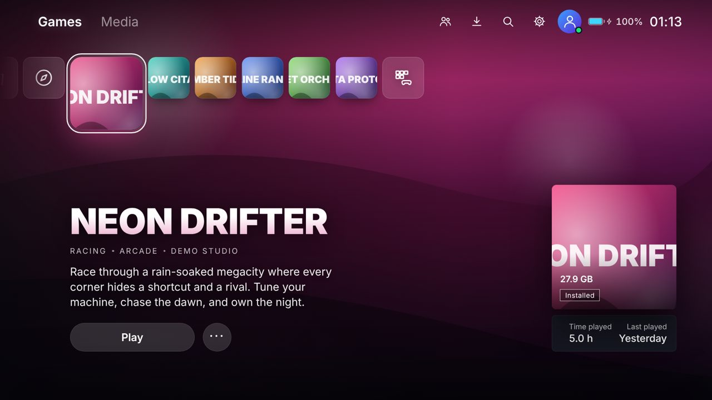
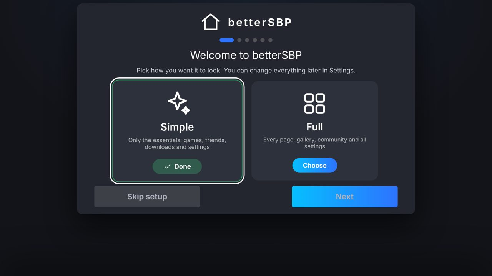
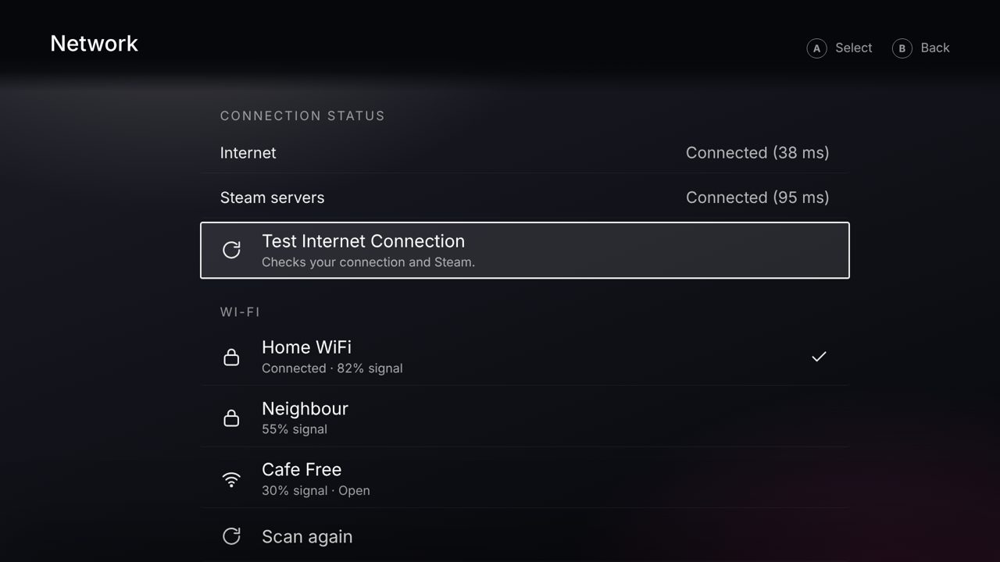
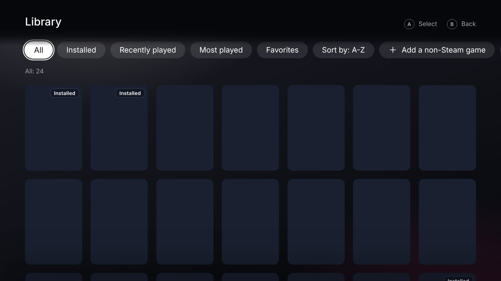

betterSBP
A console-style, controller-first replacement for Steam Big Picture on Windows.
Download for WindowsGitHub
- Library, store, friends, chat and downloads in one fullscreen dashboard
- Steam, Xbox and Discord friends with message pop-ups
- Wi-Fi and Bluetooth with its own UI
- YouTube and Xbox Cloud Gaming
- Gamepad, keyboard and mouse everywhere


